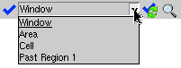

Running Calibre RealTime in Window, Area, or Cell Mode with Calibre DESIGNrev
Prerequisites
You have completed “Specifying the Rule File, Check Recipe, and Calibre RealTime Options (DESIGNrev)”
Procedure
- In Calibre
DESIGNrev, open the options dropdown menu (
 ) and
disable “Run DRC on Edit”; this puts Calibre RealTime in the Run
DRC in Window mode, which is indicated with the icon
in the integrated toolbar. (This step is optional—you can still run
in window, area, or cell mode while “Run DRC on Edit” is enabled.)
) and
disable “Run DRC on Edit”; this puts Calibre RealTime in the Run
DRC in Window mode, which is indicated with the icon
in the integrated toolbar. (This step is optional—you can still run
in window, area, or cell mode while “Run DRC on Edit” is enabled.)See “DRC Run and Highlight Options Menu (DESIGNrev)” for the definitions of the remaining selections in the
options
menu. - Select the DRC run type and
start a run.
The DRC run type is selected in the toolbar, in a dropdown menu next to the
 button:
button:
DRC Run Type
Instructions
Window
Runs DRC on the geometries visible in the design tool window:
Choose the Window run type.
Zoom to the region you want to run DRC on and make sure all the geometries you want to run checks on are visible.
Click the
button to start the run.
Area
Runs DRC on a selected region:
Choose the Area run type.
Click the
button. Use the mouse to drag a rectangle around the area you want to run DRC on.
Cell
Runs DRC on the whole cell that is open in the active window:
Choose the Cell run type.
Click the
button to start the run.
Past Region 1, Past Region 2, …
Runs DRC on a previously selected area:
Choose the area to run on. The most recent area is always named Past Region 1.
Click the
button to start the run.
Results
The results of a Calibre RealTime run are shown in Figure 1. You can use the highlight controls in the integrated toolbar to step through results.